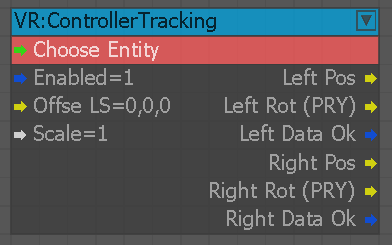
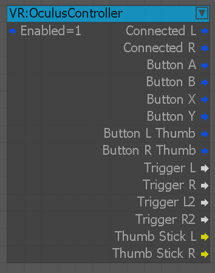
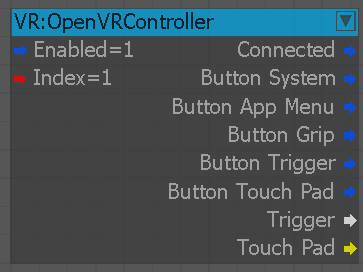
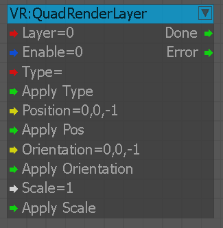
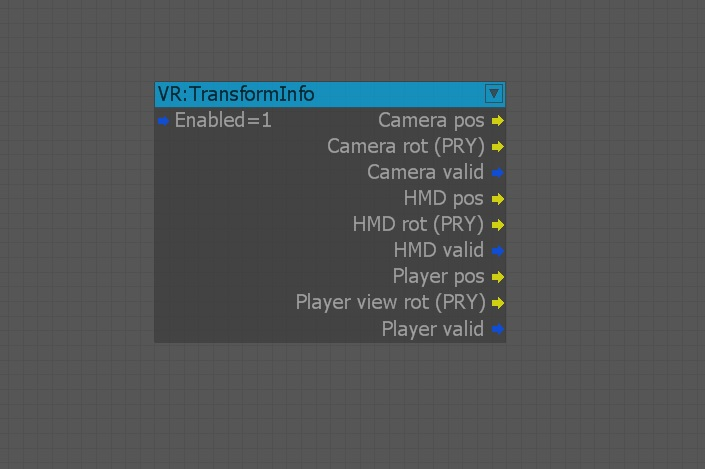
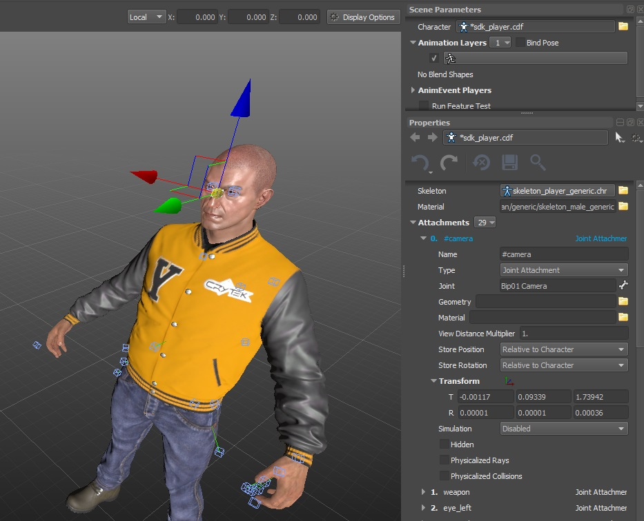
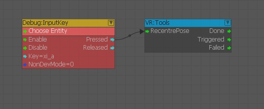

Overview
These flowgraph nodes are for getting information back from the attached HMD device & also relevant information to do with the camera & players position.
ControllerTracking
This node provides information about the orientation and position of the VR controller in world space based on the world transform of the selected entity.

Input | Description |
|---|---|
Enabled | The input number to be calculated by the Abs function |
Offse LS | Offset in the selected entity's local space. |
Scale | Scales the controller's movements. |
Output | Description |
Left pos | Position of the left controller. |
| Left Rot (PRY) | Rotation of the left controller in degrees (PRY – pitch, roll, yaw). |
| Left data ok | Valid data output from left controller. This means that the controller is connected and active. |
| Right pos | Position of the right controller. |
| Right Rot (PRY) | Rotation of the right controller in degrees (PRY – pitch, roll, yaw). |
| Right data ok | Valid data output from right controller. This means that the controller is connected and active. |
OculusController
This node provides information about the connected Oculus Touch VR controllers. 
OpenVRController
This node provides information about the connected OpenVR controllers.

QuadRenderLayer
Allows to modify parameters in a VR Quad layer.

VR:TransformInfo
This is for returning the current PRY (Pitch, Roll, Yaw) of the HMD.

The 9 outputs on this node allow you to get the current PRY directional & rotational values of the camera, player & HMD device. The 1 input node is to enable/disable the ability for the node to output information.
| Output | Type | Description |
|---|---|---|
| Camera Pos | vec3 | Output the position of the camera in the world |
| Camera Rot (PRY) | vec3 | Output the direction the camera is facing |
| Camera Valid | Bool | Check to see if camera is active |
| HMD Pos | vec3 | Output the position of the HMD device in the world |
| HMD Rot (PRY) | vec3 | Output the direction the HMD device is facing |
| HMD Valid | Bool | Check to see if HMD device is active |
| Player Pos | vec3 | Output the player's character position in the world |
| Player Rot (PRY) | vec3 | Output the direction the player's character is facing |
| Player Valid | Bool | Check to see if the player is active |
Note that the position of the camera, is roughly 1.8m above the player's character position. This is because the player's character position is calculated from the floor (between the feet) but the camera is is connected to the joint Bip01 Camera.

VR:Tools
This node is for re-centering the HMD device. This is used for when your HMD is out of sync with the tracker unit. Once triggered, this will align the HMD back as if it was pointing directly at the tracker. (assuming that you, (physically) are also aligned with the tracking unit).
Some possible use cases are:
- If you leave the HMD device on the table & forward "in-game" is not forward in the real world.
- The HMD is out of sync with the tracker unit & your natural looking forward pose "in-game" is your head slumped forward on your chest "in the real world".
This can be bound to a key or button on a joypad, (taking any input signal) and once triggered it assumes the player is sitting comfortably looking forward & will then re-sync the looking forward pose with your natural sitting position.

In the above example, it is configured to respond to an input from the control mapping of xi_a (xbox controller A / green button). (See input devices info HERE)
We supply 3 outputs, Done, Triggered, or Failed. These are to track whether you want respond to the completion of the action or to check if the HMD reset pose fail the action & you can then apply some following logic.